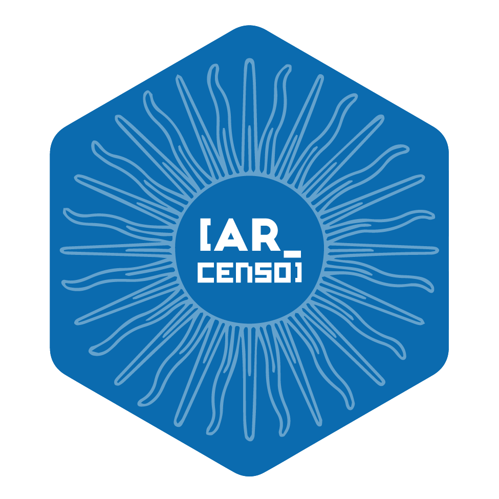

Licenciada en Sociología & Maestranda en Generación y Análisis de Información Estadística.
Experiencia profesional
Analista de Estadísticas Poblacionales, INDEC (2021 – actualidad)
Rol en la Dirección Nacional de Estadísticas Sociales y de Población. Buenos Aires.
- Trabajo en pipelines de datos desarrollados en R. Análisis y procesamiento de bases de datos utilizando R y SQL de diversas fuentes de datos (censos, encuestas y registros administrativos).
- Diseño, desarrollo y entrega de productos estadísticos digitales basados en datos.
- Elaboración y cálculo de indicadores sociodemográficos a nivel nacional.
Publicaciones:
Desarrollo de Software 📦

arcenso: paquete en R con datos censales de población Argentina.
Desarrolladora principal github.com/SoyAndrea/arcenso
Buenos Aires - 2024
Becas
Diversity Scholarship to individuals worldwide who are members of an underrepresented group so they can attend posit::conf(). Seattle, Estados Unidos - 2024.
Mentoring and training program from Scientific Open Source]. Buenos Aires - Virtual. 2024.
Formación profesional
- Maestría en Generación y Análisis de Información Estadística
Universidad Nacional Tres de Febrero (UNTREF). Buenos Aires. 2024-actualidad.
- Licenciatura en Sociología
Universidad de Buenos Aires (UBA). Buenos Aires. 2020.
Consultorías
- Fundación Huésped
Analisis de datos y elaboración de reporte de Resultados Encuesta de Salud para Personas Migrantes 2024
Buenos Aires
01/08/2024 - 30/09/2024
- Dirección General de Inserción Laboral de la Mujer, Gobierno de la Ciudad de Buenos Aires
Elaboración de capacitación Mujeres & IT para el Programa de habilidades para la empleabilidad.
Buenos Aires
01/03/2023 – 31/10/2023
- Organización de Estados Iberoamericanos, Oficina Nacional Argentina
Analista de datos en Programa de Fortalecimiento para el desarrollo, preservación y promoción de la Cultura Argentina.
Buenos Aires
01/10/2022 – 31/01/2023
- Cámara Argentina del Libro
Procesamiento, análisis y presentación de datos para informe básico semestral producción del libro argentino
Buenos Aires
01/08/2022 – 30/09/2022
- CEIS Consultora
Analista en proyectos de investigación cuantitativa sobre mercado de trabajo. Recolección de información y procesamiento de datos en R.
Buenos Aires
01/05/2021 – 30/06/2021
Experiencia docente
Universidad Nacional Guillermo Brown, Docente adjunta dedicación simple. Materia Visualización de la Información - carrera de grado ciencia de datos. Buenos Aires - Virtual. 2023-2024.
Universidad Nacional de San Martín, Profesora de Posgrado. Diplomatura en Ciencias Sociales Computacionales y Humanidades Digitales. Buenos Aires - Virtual. 2023.
Asociación Argentina de Especialistas en Estudios del Trabajo, Docente. Curso de Introducción al Procesamiento de Datos con R edición 2022 & 2023. Virtual. 2022-2023.
Facultad Latinoamericana de Ciencias Sociales (FLACSO), Tutora técnico-pedagógica. Curso de Posgrado Big Data e Inteligencia Territorial. Virtual. 2022-2021.
Cursos y capacitaciones
Ciclo de formaciones en SQL: Bases de datos con SQL & selecciones avanzadas en SQL ORACLE INDEC. Buenos Aires. 2023
Diseño y construcción de indicadores & Estadísticas Sociales 2. DANE Colombia. Virtual. 2023
Aplicación del Sistema de Información Geográfica (SIG) en el análisis de indicadores sociodemográficos. INDEC. Buenos Aires. 2022
Accesiblidad web: introducción y pautas & técnicas y herramientas para mejorarla. INAP. Virtual. 2022
Social Data Analytics. Escuela Argentina de Nuevas Tecnologías. Virtual. 2021
Congresos, charlas, ponencias
R en Buenos Aires & R-Ladies Buenos Aires Meetup {ARcenso}📦 - Data from Argentina’s Population Census. Andrea Gomez Vargas & Emanuel Ciardullo. 2024.
LatinR2024: Conferencia Latinoamericana sobre Uso de R en Investigación + Desarrollo {ARcenso}: primeros pasos desarrollando un paquete en comunidad con rOpenSci 📦. Andrea Gomez Vargas & Emanuel Ciardullo. Sesión: Proceso de desarrollo de paquetes. 2024.
LatinR2024: Conferencia Latinoamericana sobre Uso de R en Investigación + Desarrollo Tablero estadístico en Shinydashboard de personas mayores en Argentina 📊. Andrea Gomez Vargas, Juan Manuel Damiani, Barbara Estévez Leston y Leandro Olivo. Sesión: automatización de procesos, gestión de datos y reportes. 2024.
LatinR2023: Conferencia Latinoamericana sobre Uso de R en Investigación + Desarrollo SIES Argentina: R & Shiny en la difusión de estadísticas oficiales. Andrea Gomez Vargas, María Florencia Bathory, Juan Manuel Damiani, Barbara Estévez Leston, Jimena Fernández Moyano y Leandro Olivo. Sesión datos abiertos y estadísticas oficiales. 2023.
R-Ladies Buenos Aires Meetup Taller Introducción al Análisis de la Encuesta Permanente de Hogares (EPH) con R. Andrea Gomez Vargas & Betsy Cohen. Facultad de Ciencias Sociales UBA. 2023.
CSV Conference Workshop Software Carpentry: Introducción a Git y GitHub desde Rstudio Instructoras: Irene Ramos y Andrea Gomez Vargas. 2023.
useR! 2021 The R Conference Using R in Latin America: the great, the good, the bad, and the ugly. García Alonso, Virginia A.; Corrales, Paola; Huaylla, Claudia A.; Gómez Vargas, Andrea; Chávez, Joselyn; Fierro Arcos, Denisse. Session 9B - Community and Outreach 2. 2021.
Ver más en Charlas & Talleres soyandrea.github.io/talleres